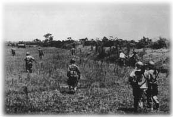

25 de mayo de 1954A pesar de la mosquitera, a pesar del humo de las fogatas, a pesar de haberse untado la piel con la pestilente loción, los cínifes habían conseguido saciarse de su sangre húngara. Era probable que aún anduvieran en el suelo de la tienda con sus vientres ahítos, sin poder remontar el vuelo. André se rascó los brazos por enésima vez, tratando de calmar el escozor producido por su saliva. Hacía dos días que había salido de Namndinh y un compañero le había advertido
en el delta del Song Koi, los mosquitos son el arma secreta de los vietnamitas; ellos son inmunes a su picadura, pero a los occidentales nos sangran y nos vuelven locos con su veneno.
Pero no era la picazón lo que más le desazonaba. Ni la humedad que colapsaba los poros de la piel e impedía sudar cuando apenas había amanecido. Ni el sabor agrio del café o el olor a revenido de las galletas. Tampoco el tono soez y bárbaro del teniente que estaba a cargo de esas maniobras y que mandaba a sus hombres con crueldad. El malestar había aparecido nada más dejar Namndinh y al comienzo no supo a qué atribuirlo. Sólo cuando el batallón se detuvo al mediodía de la primera jornada y él pudo dejar en el suelo su equipaje se dio cuenta de que su cámara y la mochila con las cajas de película se habían convertido en un peso insoportable.Con el agobio de quien lleva a la espalda una carga infinita, André arrojó a las brasas los restos del café y tomó del suelo su máquina y su macuto de color gris oliva. Los soldados habían recogido las tiendas y los pertrechos y se alineaban de dos en fondo en el calvero que les había servido de acampada, donde los cabos harían el recuento de sus pelotones e informarían rutinariamente al oficial
todos los soldados en sus puestos, mi teniente.
Nadie le contó a él, que por supuesto no estaba obligado a ninguna disciplina militar y que podía moverse libremente por donde quisiera. Se acercó a las filas de soldados cargados con sus enormes morrales y supo que ese encuadre era bueno, con los cascos reflejando la luz del sol, pero le dio pereza sacar la cámara de su funda. Fotos como ésa habían sido hechas centenares de veces, aunque sólo él sabía conferirles el aura que le había hecho famoso. Aquella imagen era estática, pero sólo en apariencia. Él sabía captar la incertidumbre en los ojos, la inquietud en una mano que afloja un correaje o la pesadez de un rostro machacado por el cansancio.
A las órdenes del oficial, la columna echó a andar. A la noche estaba prevista la llegada a Thaibinh, distante sólo ocho kilómetros, pero las quince horas que faltaban se ocuparían con unas maniobras ordenadas por el mando francés en la zona. La agencia, sabiendo que tarde o temprano estallarían los combates, le había pedido que fuese allí. Sería el sexto conflicto bélico que cubriría con su cámara, para reflejar una vez más la muerte, la desesperación, el odio y el miedo.
Una hora de marcha rutinaria les llevó hasta una llanura cuyo nombre había olvidado. Se entretuvo en ver cómo se alzaba el sol por encima de los árboles al otro lado del río. En escuchar los cantos de las aves que huían de los árboles que flanqueaban el sendero. En descubrir rumores entre los matojos, quizá de tapires o monos que sentían invadido su territorio. Se preguntó en qué maldito momento de su vida había caído en sus manos una cámara fotográfica, cuando a él lo que de verdad le habría gustado era ser pintor. Pintor de naturalezas vivas y no fotógrafo de la muerte. Los militares le conocían y sentían cierto orgullo por tenerle allí. El que caminaba a su lado le sacó de sus ensoñaciones
señor Capa, quiero pedirle el favor de que me haga una foto y se la envíe a mi mujer, que está en Marsella…
El tintineo de la cantimplora sobre la culata del fusil de ese soldado marcaba el ritmo de los pasos de la columna. André viajaba el último, agotado por la falta de sueño y agobiado por el peso de su morral. Desde la muerte de su querida Gerda, hacía ya dieciocho años, cada foto le arrancaba una porción de alma. A través del ojo de su cámara había mostrado al mundo el horror de varias guerras, la tristeza de combatientes, refugiados y desplazados en medio del espanto.
La precisa fotografía de la muerte de un miliciano en la guerra española apareció en las portadas de cientos de revistas y le consagró como reportero de guerra. Sin embargo, no era esa su foto más querida. De los setenta mil negativos de su colección había seleccionado menos de mil, pero ahora, si le dieran a elegir, se quedaría con una: la tomada en enero del 39 a la puerta de un centro de refugiados en Barcelona. En ella, una niña bellísima, de ojos tristes, descansaba sobre un montón de fardos, el pie apoyado sobre una bolsa de asas que contenía las únicas pertenencias familiares, y por la que asomaba el rabo de una sartén. Ya entonces, cuando envió la imagen, había avisado de su dolor
no siempre resulta fácil mantenerse al margen, incapaz de hacer nada, salvo reflejar los sufrimientos que te rodean.
Gerda habría captado la trascendencia de aquella confesión, su hartura y la angustia de su corazón. Nadie más la entendió, y él no se resistió a acudir allá donde las bombas y las balas dejaban su reguero de desesperación. Pero cada viaje y cada click de su cámara le habían arrancado la carne del alma a pequeños mordiscos, más lacerantes que las picaduras de los mosquitos. Tenía sólo cuarenta años, y aunque su cuerpo parecía mantenerse entero, su corazón estaba roído por el desánimo. Pensaba que tras las lecciones de la guerra de Europa y de las bombas en Japón el mundo renunciaría a esos horrores, pero se había equivocado. Ahí estaba él de nuevo.
El destacamento abandonó el borde del río. La llanura apareció después de subir un pequeño promontorio, cubierta por las nubes de vapor procedente de los arrozales próximos. El silbato del oficial detuvo a los soldados. Habían llegado a la zona de maniobras. André sacó la cámara y fotografió el horizonte, cielo y suelo abrazados en un manto de neblina, una pintura apacible, de cuando la tierra no se había dejado robar los secretos del hierro y la pólvora.
Juegos de soldados. Los cabos se hicieron cargo de sus pelotones y los desplegaron en tres columnas, barriendo la llanura desde su izquierda. André se quedó con la última y avanzó al final, cámara en mano. Miró su reloj: eran las ocho de la mañana. Como si en un lugar lejano alguien se hubiera hecho eco de su gesto, primero llegó un sordo estampido y a continuación un silbido. Un obús estalló en el centro de la planicie levantando una nube de agua y lodo. Juegos de soldados, con hierro y dinamita. El soldado marsellés le advirtió
cúbrase, señor Capa, y agáchese cuando nosotros lo hagamos; esto no es una broma.
No era una broma. Al estampido del mortero siguieron tableteos de ametralladoras y disparos aislados. Como malos actores de teatro, los soldados caminaban agachados sin convicción en medio del fuego. Conocían las reglas macabras de los mandos que habían ordenado esas maniobras: sólo un proyectil de cada diez tenía munición de guerra. No era un combate del todo real, pero tenía sus riesgos, a los que se sumaba el que recorrieran territorio enemigo.
André caminó erguido y estupefacto, con el objetivo de su cámara protegido por la tapa. Las explosiones de mortero agitaban el vapor de agua suspendido en el aire. La quietud de la mañana se trizó con los silbidos de las balas. Los hombres avanzaban, a veces agachados, a veces arrastrándose entre el fango, siguiendo las órdenes de sus mandos. Sólo era un juego con riesgos, pero sobre todo constituía el prólogo de otras páginas de historia macabra que arrasaría esos bosques, que llenaría de dolor las aldeas vietnamitas, que poblaría los caminos y las cunetas con caravanas de refugiados con sus bultos al hombro. Alguien de su pelotón advirtió al resto de sus compañeros
minas; atención, hay minas.
Un soldado colocó un banderín amarillo pocos metros delante de él. Los demás comenzaron a andar despacio, escrutando el suelo bajo sus pies. André contempló la planicie y las lejanas montañas. Los uniformes y el ruido de los fusiles violaban la calma de siglos de ese paisaje, digno de ser pintado. Las correas de su macuto se clavaban en su piel como si estuviera lleno de plomo. Tuvo la sensación de que no podía dar un paso más. No quería acompañar a esos hombres a abrir otro libro siniestro. Él ya lo había enseñado todo, pero el mundo no había aprendido. Decidió que esta vez irían sin él.
André quitó la tapa del objetivo y se acercó la cámara. En el visor cupieron las siluetas de nueve hombres, de espaldas, caminando hacia la historia. La tierra y el cielo sabrían muy pronto de la humedad de la sangre y de la aspereza del humo. Él lo había contemplado demasiadas veces y no quería ser testigo del desastre. Sonó un click y saltó otro pedacito de su alma desvalida. Protegió el visor de la cámara y avanzó con decisión hacia el banderín amarillo.
Mientras su cuerpo saltaba por el aire recordó la imagen serena de la niña acurrucada entre los fardos. En medio de la negrura, su rostro se hizo cada vez más grande y luminoso y se acercó a consolar su corazón, como si quisiera vestirle el alma.
Esbozó una leve sonrisa.